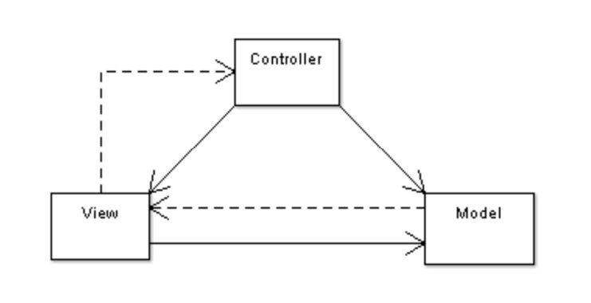
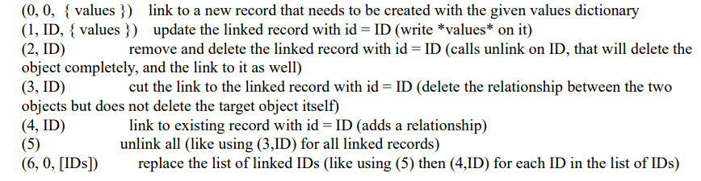

This app contains all base odoo development contents
Contents
Model View Controller

Model: PostgreSQL table
View: views defined in XML files in Odoo
Controller: The objects of Odoo
docker exec -it postgres_image_name psql -d db_name --username=UserName
odoo scaffold model_name /mnt/extra-addons
Odoo models are created by inheriting one of the following:
Model
TransientModel
AbstractModel
Parameters:
string
help
invisible
readonly
required
index
default
states
groups
copy
store
Odoo Fields:
Char
Integer
Float
Text
Selection
Many2one
One2many
Many2many
Boolean
Date(time)

Computed Field Parameters:
compute
compute_sudo
inverse
related
onchange
constraints
_sql_constraints
api.constraints
Tree
Form
Search
QWeb
Window Action
Server Action
Scheduale Action
Report Action
Fields Domain
Python Field Attribute
XML Field attribute
Python Method
Search
Search Count
Read
Browse
Read Group
Unlink
Create
Write/Update
Copy
Method
Environment.ref
Environment.user
Environment.tz
Model.with_context
Model.with_user
Model.sudo
Group
Field Group
Menu Group
View Group
Access Rights
Public
Group Based
Record Rule
Global
Group-specific
Extend Model
Extend View
Extend Method
Add System Parameter and use it